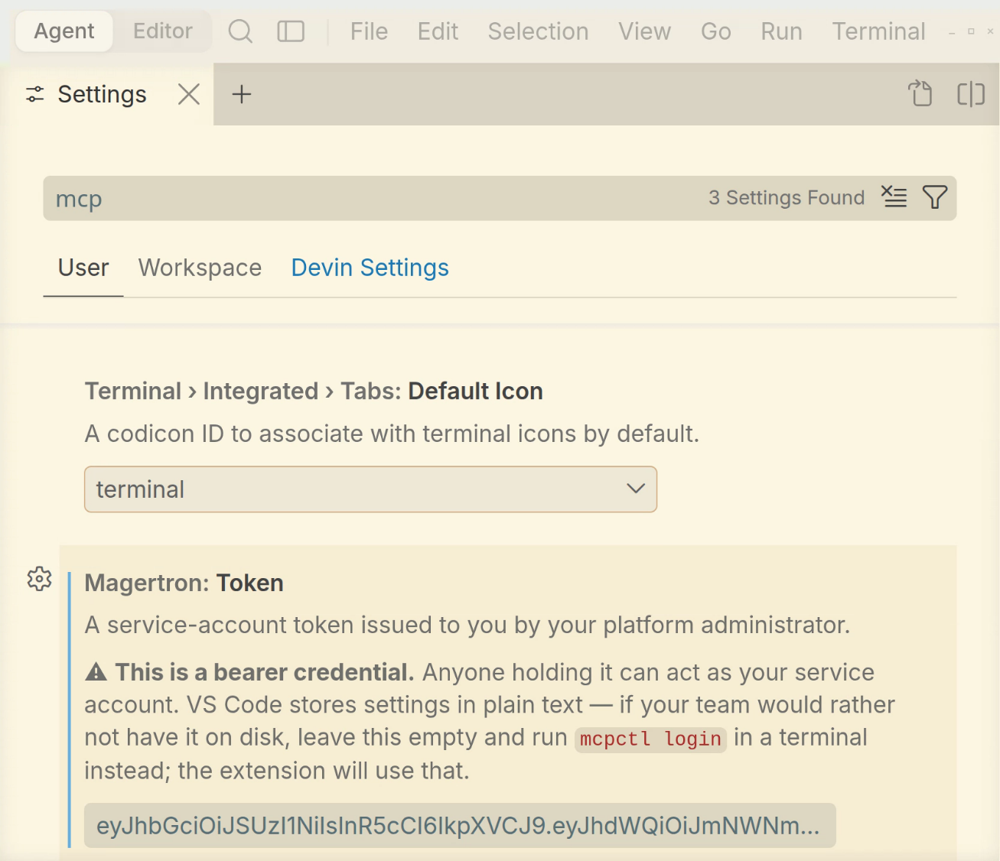
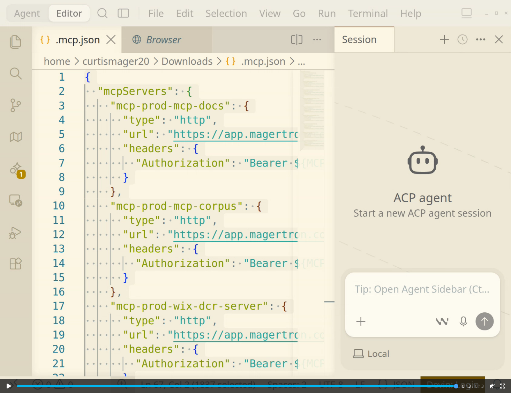
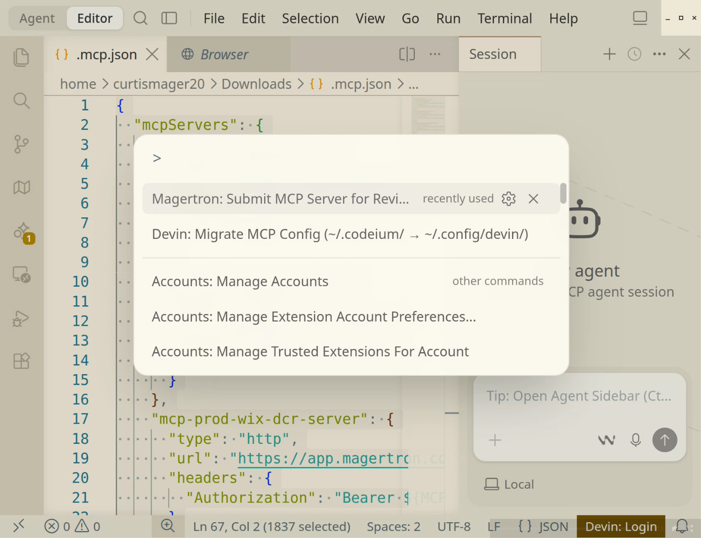

Devin
Use the MCP servers your platform has already approved — and hand it the ones you build. Both directions, from inside Devin Desktop.
One setting, and the extension does the rest.
/portalmagertron
There is no command to run. On startup the extension asks the gateway what your roles can reach and writes every one of them — across every namespace you are entitled to — into Devin’s MCP config. Servers you cannot reach are not in the file, because they were never in the answer.

${MCP_TOKEN}, so it is safe to commit to a repository or
paste into a chat. Export the token in your shell profile and start Devin
from that shell.
One thing the tarball does not do for you.
# unpack wherever you keep applications
sudo mv Devin /opt/devin
sudo ln -sf /opt/devin/bin/devin-desktop /usr/local/bin/devin-desktop
# without this it exits immediately, printing nothing through the wrapper
sudo chown root:root /opt/devin/chrome-sandbox
sudo chmod 4755 /opt/devin/chrome-sandbox
Run /opt/devin/devin-desktop directly if it still fails
— the wrapper swallows the error, the binary prints it.
On purpose. That is the point of a governed platform.
A token that lasts a year keeps working long after somebody's access has been revoked, and outlives every role change in between. Yours does not. When calls start failing, mint a new one and restart your editor.
Organizations issuing agent credentials through their own identity provider can exchange those for short-lived platform tokens automatically. Ask your platform team.
The other direction, and it uses the extension rather than a config file.
devin-desktop --install-extension magertron-submit-<version>.vsix
Migrate MCP Config sits beside it — it moves a config from Windsurf’s path, and has nothing to do with the gateway.One extension, every editor. Devin Desktop is a VS Code fork and runs it unchanged — the same file installs in Cursor, VS Code and Windsurf. There is no separate build and no Devin-specific version to keep current.
Anything credential-shaped is removed before the manifest leaves your machine. Environment variable names are sent; values are not, including defaults written into the file. Your platform team can see that a server needs a secret without ever seeing the secret.
Worth knowing, rather than discovering.
If your organization runs Magertron's endpoint inventory, the MCP config on this machine is read on a schedule and matched against what has been approved — whether it points at the gateway, straight at a vendor, or at a route that no longer exists. Nothing resident is installed; it rides the endpoint management your IT team already runs.
Configuring through the portal is the quiet path: those servers are the approved ones by definition.
Run the orchestrator in your own sandbox and point Devin at it.
# add the chart repository
helm repo add magertron https://magertron.com/charts
helm repo update
# install into a new namespace
helm install mcp magertron/mcp-orchestrator \
--namespace mcp-system --create-namespaceStarts in Free Tier. No license required. More at magertron.com/charts.
Also available for Cursor, VS Code and Claude Code.